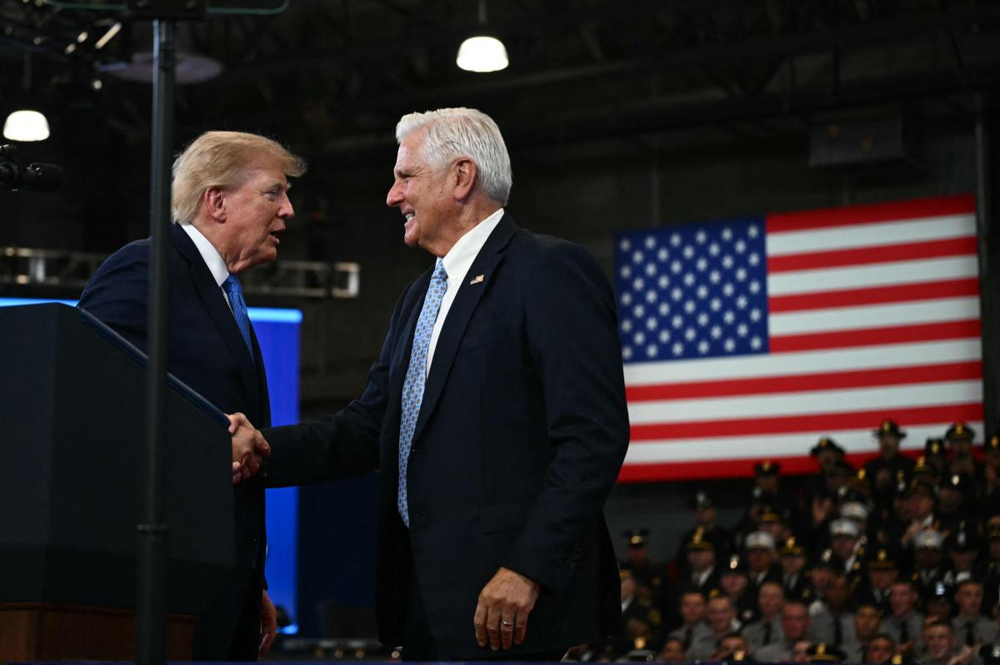
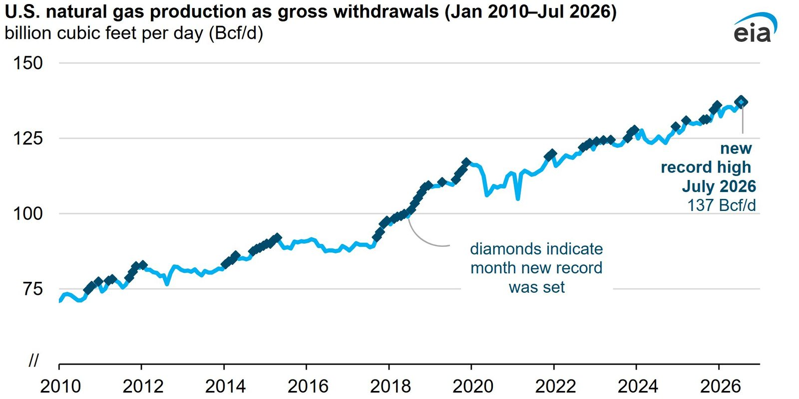
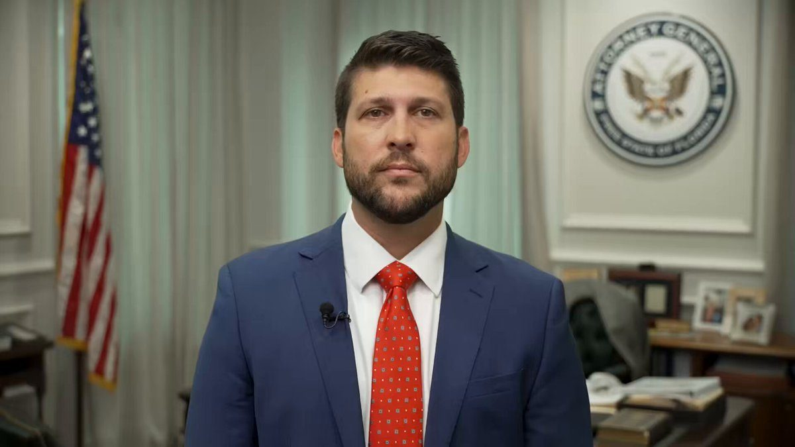
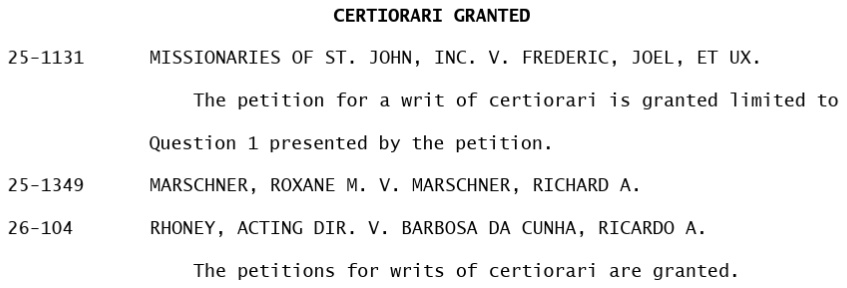

#BREAKING: 500 U.S. troops deploy to the Rio Grande after cartel shot at a Coast Guard boat.
The Office of the Under Secretary of War for Research and Engineering (R&E), through the Office of the Assistant Secretary of War for Critical Technologies (CT), has announced an agreement to partner with the Central Intelligence Agency and In-Q-Tel (IQT), a not-for-profit strategic investor that has served the national security community since 1999. The partnership gives the Department's research and engineering enterprise structured access to IQT's global technology-scouting platform and its portfolio of early-stage companies, with the explicit objective of compressing the timeline to transition and rapidly field mature commercial solutions from non-traditional performers to the warfighter. The Department of War has mandated six Critical Technology Areas (CTAs) as the focus of its investment and transition efforts: Applied Artificial Intelligence, Biomanufacturing, Contested Logistics Technologies, Quantum and Battlefield Information Dominance, Scaled Directed Energy, and Scaled Hypersonics. Under the agreement, IQT will conduct technology scouting and technical due diligence across all six CTAs, as well as across enabling technology areas, while the Department identifies transition sponsors and pathways for validated technologies. "In a contested global threat environment, technological superiority will not be determined by who invents a capability first, but by who delivers it to the warfighter fastest. The Department is fundamentally shifting its posture: we are moving from acting solely as a long-cycle technology developer to operating as an agile, credible, and rapid customer for America's most innovative non-traditional performers. Our partnership with In-Q-Tel eliminates bureaucratic friction across our six CTAs. Over the next 12 months, our benchmark for success is simple and unambiguous: moving validated commercial prototypes out of the lab and into active operational field evaluations with our combatant commands," said Hon. Michael Dodd, Assistant Secretary of War for Critical Technologies. The integration leverages In-Q-Tel's proven venture capital methodology to vet early-stage commercial solutions that align directly with the Department's urgent mission requirements. By combining CT's strategic transition pathways with IQT's deep-tech scouting infrastructure, the partnership aims to significantly de-risk the integration of commercial hardware and software for national security applications, signaling to the commercial tech sector that the Department of War is open for business. Joint pilot programs under this new partnership will begin in the coming weeks, targeting immediate battlefield bottlenecks. By aligning IQT's venture ecosystem with the Department's rapid transition pipelines, both organizations aim to establish a permanent bridge that converts commercial ingenuity into deployed military capability at the speed of relevance.
https://www.war.gov/News/Releases/Release/Article/4617047/department-of-wars-critical-technologies-office-partners-with-in-q-tel-to-accel/
18 hours notice. Anywhere in the world.
As a part of the joint force, the 82nd Airborne Division can rapidly deploy within 18 hours of notification to strategically conduct forcible entry parachute assaults and secure key objectives anywhere in the world—making it clear that our reach is absolute and our response is immediate throughout the #SOUTHCOM area of responsibility.
@DeptofWar @SECWAR @USArmyWHC
▶ Watch on XI am directing all commanders and supervisors at every level to conduct a one-day stand-down in the month of October.
Every warrior will be given the opportunity to vote.
▶ Watch on XNo fatties. No trannies. No beardos. No weirdoes. No wimps. No radicals — JUST WARRIORS.
▶ Watch on XBREAKING: Trump asked for Grok's opinion before invading Venezuela and capturing Nicolás Maduro, spending hours asking Musk's AI chatbot how Venezuelans would respond to the capture of their president, weeks before ordering the mission that took Maduro, a US official tells TIME.
Grok told him Venezuelans would celebrate.
The official adds that the US military used Gov Grok to deploy and strike targets during the Iran war.
This week, the Commission proposed to close a gap that has left investment advisers and funds guessing how to effect lawful custody of an asset class that their clients increasingly demand. This is another significant step toward bringing our regulatory frameworks into the modern era and fulfilling our commitment to cement the United States as the crypto capital of the world. Since the advent of Bitcoin in 2008, the crypto asset market has grown from a niche curiosity into a multi-trillion-dollar asset class to which investors actively seek exposure. Unfortunately, our rules and regulations have not kept pace. To that end, today’s proposal would provide a clear regulatory framework for the custody of crypto assets, giving investment advisers and funds a compliant pathway where none existed before—and replacing the grey of uncertainty created by custody rules crafted for a bygone era. Many areas of the custody rules under the Investment Advisers Act of 1940 and Investment Company Act of 1940 predate the internet; they were designed to protect the assets of advisory clients and regulated funds from loss, theft, misuse, and misappropriation. Notably, they contemplate the custody and safekeeping only of traditional assets – an untenable situation in the 21st century. A key protection in the current rules is the required use of permitted custodians. However, with newly developed crypto assets, custodial capabilities may lag an asset’s deployment by many months. That is a substantial problem, one which today’s proposal intends to solve. In doing so, we will further modernize our regulatory framework, and we will help ensure the United States remains the global leader in crypto innovation for decades to come. In addition to the proposed crypto-specific custody framework, the proposal would also implement a number of long-needed modernizations of the current investment adviser and regulated fund custody rules. These provisions have not been amended for decades. Therefore, this proposal seeks to ensure that they are fit for purpose and better address current industry practices and feedback. Today’s proposed crypto custody framework is not an isolated initiative. It is another element of a comprehensive crypto asset regulatory approach. It began with ending regulation by enforcement. In December 2025, Commission staff issued a no-action letter to the Depository Trust Company regarding DTC’s voluntary securities tokenization pilot program. And in January 2026, Commission staff issued a statement on tokenized securities that provided a clear tokenization taxonomy for the marketplace. The Commission followed with an interpretation regarding which crypto assets are securities and when crypto assets may cease to be subject to investment contracts. In April, Commission staff published a statement regarding broker-dealer registration implications for certain user interfaces utilized to prepare transactions in tokenized securities. And in August of this year, we proposed Regulation Crypto Assets, which would create a tailored offering regime for certain investment contracts involving crypto assets. Most recently, we introduced an Innovation Exemption, providing a cabined pathway to facilitate the trading of tokenized NMS stock. These efforts acknowledge that blockchain technology holds the potential to modernize the financial system, and that onchain markets should not be relegated offshore or forced into ill-fitting regulatory models. That said, our work is not finished. More regulatory proposals are on the horizon, and I look forward to continuing to help President Trump cement the United States as the crypto capital of the world.
A new Economic Letter highlights that stablecoin issuers' Treasury holdings have grown more than $200B in five years, helping offset the decline in China's holdings. https://t.co/F6axYt4YKR
JUST IN: 🇰🇷 South Korea drafts rules to move its $7 trillion stock and bond markets onto blockchain starting February 2027.
VP RESPONDS DIRECTLY TO "YOUNG MEN WHO ARE P*SSED OFF"
"We institutionalized anti-white, anti-male discrimination in this country. Totally disgusting. There is a lot more work to do, but we are NOT discriminating against people."
@JackPosobiec @VP @JDVance
JUST IN: This afternoon, the National Capital Planning Commission unanimously approved the final site and building plans for the White House Visitor Screening Facility, which will be located within Presidents Park, just off 15th Street.
BREAKING: DOJ launches review into whether Richard Nixon was “mistreated” by prosecutors during the Watergate scandal.
The left's discrimination regime was immoral and evil.
Absolute chaos across France:
625 arrests 83 police officers attacked 32 teachers injured Hundreds of schools burned down Vehicles and churches set on fire
North African and far-left students have declared war against the French state.
BREAKING:
Second and third-generation students continue to attack schools across France
▶ Watch on XThere’s a very good chance that France explodes into civil war before the U.K.
▶ Watch on XNew: Net migration accounted for 96.7% of the United Kingdom's population growth in 2025.
What once was the peak, is now just the beginning.
Paramount and Warner Bros. shaped over a century of culture. By combining them, we aren't rewriting history — we're equipping these iconic studios with a more powerful engine. Together, we are Skydance: a creative-first home for bold, quality storytelling.
We chose this name for a few important reasons. First and foremost, as we bring Paramount and Warner Bros. together, we wanted to preserve what has made each of these studios iconic. Both have distinct identities, extraordinary legacies and brands that have resonated with audiences for generations. We never wanted a new corporate identity to diminish, alter or overshadow either one. Instead, we wanted a name that would give the combined company an identity of its own while allowing Paramount and Warner Bros. — and all our extraordinary brands — to remain in the spotlight.
We have big goals for Skydance, and we intend to pursue them with passion, imagination and a willingness to take smart risks. At the same time, we will honor what makes Paramount and Warner Bros. special — giving both studios the opportunity to grow, tell more great stories and bring those stories to even broader audiences around the world, powered by the scale and capabilities of Skydance.
I couldn’t be more excited about what we’re going to build together.
Under @TomDiNapoli, New York's budget went from $120 billion to $277 billion.
If New York were a country our budget would be the 13th largest in the world.
Where was the watchdog?
Trump to campaign with Blakeman in upstate NY: sources https://t.co/urwbyqsLby

BREAKING: Trump commits $100 million to making "real school meals," but schools say "it's challenging"
Treasury Department just confirmed you can cut your federal tax bill dollar for dollar by funding K-12 scholarships instead of federal bureaucrats: give up to $1,700 as a single filer or $3,400 as a married couple, and you owe the IRS that much less, with no marriage penalty, starting January 1, 2027. Parents get choice. Bureaucrats get less of your money!!
UCLA Law rejected white & Asian applicants who had the same LSAT scores as admitted black & Hispanic applicants. It’s illegal to use different, race-keyed academic standards. The @CivilRights Division will enforce what federal law demands: equal treatment for ALL!
Texas schools reported losing 14,200 immigrant kids last year (down 7% on avg). Houston enrollment of foreign-born recent arrivals is down 22% but one San Antonio district is up 14% due to incoming Afghans and Venezuelans.
DOJ sues the University of Delaware to abolish their in-state tuition for illegal immigrants.
🚨 BOOM! The Trump administration is now probing Rochester General Hospital NY for possible H-1B and J-1 VISA ABUSE — hiring MASS FOREIGNERS and BARELY any Americans at all
GOOD. AMERICANS FIRST.
Labor IG D'Esposito: "Show us the numbers. How many residency slots went to H‑1B and J‑1 visa holders? How many American applicants got a fair shot?"
He says the White House anti-fraud task force may soon get involved.
I am SICK AND TIRED of these medical institutions thinking Americans come last. Bring FAFO!
#BREAKING: ICE deports over 1,000 illegals on 20+ flights out of Louisiana today.
Sharp rise in deportation orders for Somalis in Minnesota
98% of US households aren't paying for AI yet
More charts in State of Markets II: https://t.co/MTaxKUxa2w
In this era of artificial intelligence, it is becoming urgent to distinguish human art from what machines produce. There is an ontological difference, even before an aesthetic one, between art and what a machine can generate through statistical calculation based on millions of images created by others. Algorithms lack the spark of humanity. For this reason, the Church wishes to renew an alliance with artists and cultural institutions to safeguard our humanity.
U.S. natural gas production reached a record high in July 2026

This week, the Division of Trading and Markets staff issued a statement and is interested in your comment regarding the affiliation between registered national securities exchanges trading security futures and introducing broker-dealers.
To learn more: https://www.sec.gov/newsroom/speeches-statements/tm-statement-affiliations-093026
Want to have your mind blown?
The median U.S. family income in 1971 was 252.2 oz of gold.
That would be $1,053,623/yr today.
JUST IN: 🇹🇼🇺🇸 Taiwan receives its first advanced US F-16V fighter jets.
Treasury is dismantling the financial infrastructure that allows Iran and other adversaries to evade sanctions, move illicit funds, and undermine the integrity of the global financial system. Today’s action targeting A7 continues Treasury’s unprecedented efforts to isolate Iran and its financial enablers and sends a clear message that if you facilitate illicit finance for America’s adversaries, you will lose access to the U.S. financial system.
Vice President JD Vance on the shipyard being built in Brownsville, Texas:
“The shipyard that's being built there will become the highest tech and one of the largest ship building facilities in the world...we haven't opened a new shipyard in this country in about 80 years...this is all about the President's agenda to reindustrialize the country, build more in the United States, but you're starting to see it pay off.”
States may claim Medicaid reimbursement for health services provided by schools. HHS-OIG's new audit found that Wisconsin may have improperly claimed $455 million in federal reimbursement through its school-based program. Read more: https://oig.hhs.gov/reports/all/2026/wisconsin-may-have-improperly-claimed-455-million-in-medicaid-reimbursement-for-its-school-based-program/
Weeks ago we learned Fauci and the biomedical state knew the COVID jabs were dangerous but hid it from us.
While that investigation continues, today we sued Pfizer for deceptively marketing the products as safe—making billions—while pregnant women were miscarrying their babies and teenagers were having heart attacks.

▶ Watch on XFour trained in China. One in the Philippines. ZERO at U.S. medical schools.
That’s the ENTIRE 2026 incoming internal medicine class at San Francisco’s North East Medical Services.
And it’s not the only program with zero U.S. medical-school graduates. THREAD 🧵
.@SecMullinDHS: “I have been very clear with my counterpart in Mexico: if they allow them to continue to come north, when they get to their northern border — our southern border — we’re not allowing them to enter… Zero chance.”
NEW: The Supreme Court will decide whether individuals who entered the U.S. illegally and are later arrested in the country must be detained without bond while removal proceedings are pending.

BREAKING: Georgia Election Board Asks Trump DOJ to Declare Statewide Dominion QR-Code Machines UNLAWFUL Before Midterms — Demands Six-Month Phase-Out as Raffensperger Stonewalls
JUST IN: 🇷🇺 Russian President Putin says Russia does not plan to attack any European countries.
"Not in 2030, not in 2050."